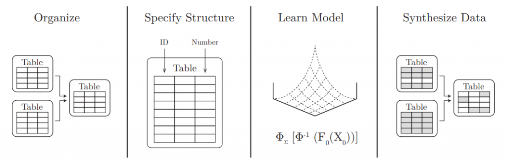
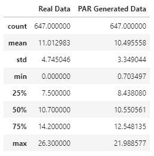
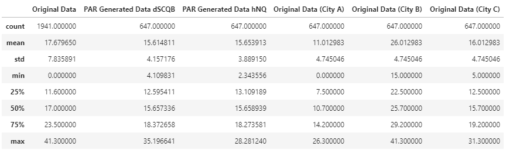

👉 This article is also published on Towards Data Science blog.
In data science, you usually need a realistic dataset to test your proof of concept. Creating fake data that captures the behavior of the actual data may sometimes be a rather tricky task. Several python packages try to achieve this task. Few popular python packages are Faker, Mimesis. However, there are mostly generating simple data like generating names, addresses, emails, etc.
To create data that captures the attributes of a complex dataset, like having time-series that somehow capture the actual data’s statistical properties, we will need a tool that generates data using different approaches. Synthetic Data Vault (SDV) python library is a tool that models complex datasets using statistical and machine learning models. This tool can be a great new tool in the toolbox of anyone who works with data and modeling.
Why this library?
The main reason I’m interested in this tool is for system testing: It’s much better to have datasets that are generated from the same actual underlying process. This way we can test our work/model in a realistic scenario rather than having unrealistic cases. There are other reasons why we need synthetic data such as data understanding, data compression, data augmentation, and data privacy (see Xu 2020).
The Synthetic Data Vault (SDV) was first introduced in the paper “The Synthetic data vault”, then used in the context of generative modeling in the master thesis “The Synthetic Data Vault: Generative Modeling for Relational Databases”” by Neha Patki. Finally, the SDV library was developed as a part of Andrew Montanez’s master thesis “SDV: An Open Source Library for Synthetic Data Generation”. Another master thesis to add new features to SDV was done by Lei Xu “Synthesizing Tabular Data using conditional GAN”.
All these work and research were done in the MIT Data-to-AI laboratory under the supervision of Kalyan Veeramachaneni – a principal research scientist at MIT Laboratory for Information and Decision Systems (LIDS, MIT).
The reason I’m bringing the history of the SDV is to appreciate the amount of work and research that has gone behind this library. An interesting article talking about the potential of using this tool, particularly in data privacy is available here.
SDV Library
The workflow of this library is shown below. A user provides the data and the schema and then fits a model to the data. At last, new synthetic data is obtained from the fitted model (see Patki, Wedge, and Veeramachaneni 2016). Moreover, the SDV library allows the user to save a fitted model (model.save("model.pkl")) for any future use.

Time-Series Data Modeling using PAR
A probabilistic autoregressive (PAR) model is used to model multi-type multivariate time-series data. The SDV library has this model implemented in the PAR class (from time-series module).
Let’s work out an example to explain different arguments of PAR class. We are going to work with a time-series of temperatures in multiple cities. The dataset will have the following column: Date, City, Measuring Device, Where, Noise.
In PAR, there are four types of columns considered in a dataset.
Sequence Index: This is the data column with the row dependencies (should be sorted like datetime or numeric values). In time-series, this is usually the time axis. In our example, the sequence index will be the Date column.
Entity Columns: These columns are the abstract entities that form the group of measurements, where each group is a time-series (hence the rows within each group should be sorted). However, rows of different entities are independent of each other. In our example, the entity column(s) will be only the City column. By the way, we can have more columns as the argument type should be a list.
Context Columns: These columns provide information about the time-series’ entities and will not change over time. In other words, the context columns should be constant within groups. In our example, Measuring Device and Where are the context columns.
Data Columns: Any other columns that do not belong to the above categories will be considered data columns. The PAR class does not have an argument for assigning data columns. So, the remaining columns that are not listed in any of the previous three categories will automatically be considered data columns. In our example, the Noise column is the data column.
Sample code
Example 1: Single Time-Series (one entity)
The PAR model for time series is implemented in PAR() class from sdv.timeseries module. If we want to model a single time-series data, then we only need to set the sequence_index argument of the PAR() class to the datetime column (the column illustrating the order of the time-series sequence).
import pandas as pd
from sdv.timeseries import PAR
actual_data = pd.read_csv("./daily_min_temperature_data_melbourne.csv")
actual_data["Date"] = pd.to_datetime(actual_data["Date"])
# Define -> Fit -> Save a PAR model
model = PAR(sequence_index="Date")
model.fit(actual_data)
model.save("data_generation_model_single_city.pkl")
# After a model is trained and pickled.
We can comment above code and just load the model next time.
model = PAR.load("data_generation_model_single_city.pkl")
# Generate new data
new_data = model1.sample(num_sequences=1) # may take few seconds to generate
new_data["Date"] = pd.to_datetime(new_data["Date"])
# Compare descriptive statistics
stat_info1 = actual_data.describe().rename(columns={"Temp": "Real Data"})
stat_info2 = new_data.describe().rename(columns={"Temp": "PAR Generated Data"})
print(stat_info1.join(stat_info2))
stat_info1.join(stat_info2)
Example 2: Time-series with multiple entities
The SDV is capable of having multiple entities meaning multiple time-series. In our example, we have temperature measurements for multiple cities. In other words, each city has a group of measurements that will be treated independently.
import pandas as pd
from sdv.timeseries import PAR
all_data = pd.read_csv("./fake_time_series_data_multiple_cities.csv")
all_data["Date"] = pd.to_datetime(all_data["Date"])
# Define -> Fit -> Save a PAR model
model = PAR(
entity_columns=["City"],
context_columns=["Measuring Device", "Location"],
sequence_index="Date",
)
model.fit(all_data)
model.save("data_generation_model_multiple_city.pkl")
# After a model is trained and pickled. We can comment above code and just load the model next time.
model = PAR.load("data_generation_model_multiple_city.pkl")
# Generate new data for two fake cities
new_data = model1.sample(num_sequences=2) # may take few seconds to generate
# Compare descriptive statistics
stat_info1 = all_data.describe().rename(columns={"Temp": "Original Data"})
stat_info2 = new_cities[new_cities["City"] == cities[0]].describe().rename(columns={"Temp": f"PAR Generated Data {cities[0]}"})
stat_info3 = new_cities[new_cities["City"] == cities[1]].describe().rename(columns={"Temp": f"PAR Generated Data {cities[1]}"})
stat_info4 = all_data[all_data["City"] == "City A"].describe().rename(columns={"Temp": "Original Data (City A)"})
stat_info5 = all_data[all_data["City"] == "City B"].describe().rename(columns={"Temp": "Original Data (City B)"})
stat_info6 = all_data[all_data["City"] == "City C"].describe().rename(columns={"Temp": "Original Data (City C)"})
stat_comparison = stat_info1.join(stat_info2).join(stat_info3).join(stat_info4).join(stat_info5).join(stat_info6)
stat_comparison
A detailed example of time-series modeling using the PAR model can be found here.
Relational Data
SDV can model relational datasets by generating data after you specify the data schema using sdv.Metadata(). Moreover, you can plot the entity-relationship (ER) diagram by using the library built-in function. After the metadata is ready, new data can be generated using the Hierarchical Modeling Algorithm. You can find more information here.
Single Table Data
SDV can also model a single table dataset. It uses statistical and deep learning models that are:
- A Gaussian Copula to model the multivariate distribution, and
- A Generative Adversarial Network (GAN) to model tabular data (based on the paper “Modeling Tabular data using Conditional GAN“.
More information about modeling single table datasets is available here.
Benchmarking Data
The SDV library provides the ability to benchmark synthetic data generators using the SDGym library to evaluate the performance of synthesizer. You can find more information here.
Conclusion
In this post, we went over the main features of the SDV library and how useful it is in generating anonymous datasets based on realistic data. The main features are modeling single table data, time-series, relational datasets, and also data benchmarking. One point to mention here is that you need to provide a large dataset for SDV models to train with. This way, the model can generate a meaningful dataset that truly captures the real process. Give this library a try and let me know what you think?
References
Citation
@online{alizadeh2020,
author = {Esmaeil Alizadeh},
title = {Synthetic {Data} {Vault} {(SDV):} {A} {Python} {Library} for
{Dataset} {Modeling}},
date = {2020-11-09},
url = {https://new.ealizadeh.com/blog/sdv-library-for-modeling-datasets},
langid = {en}
}